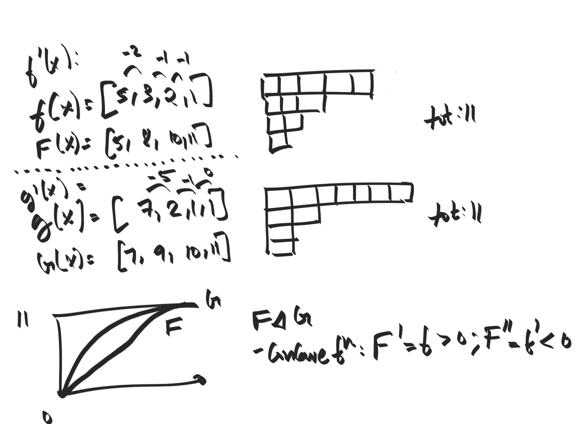
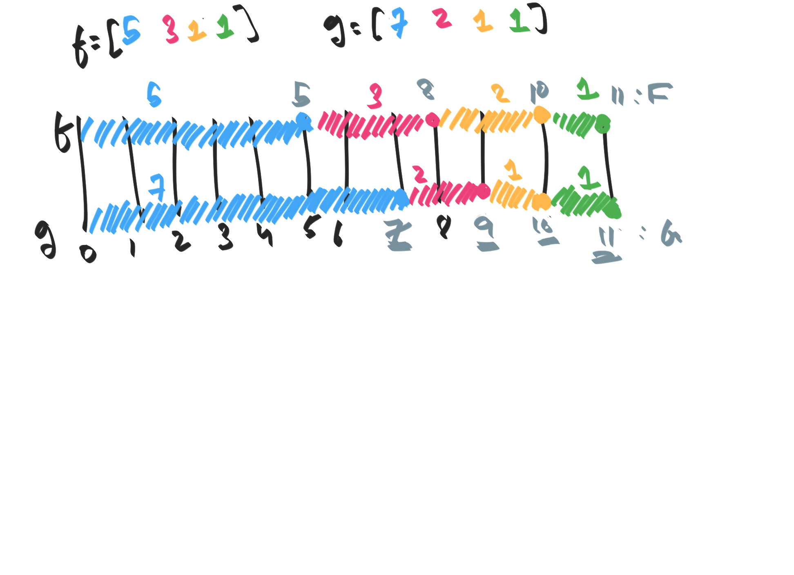

Let (a),(b)∈Rn be two non-decreasing sequences: a[1]≥a[2]⋯≥a[n],
and b[1]≥b[2]⋯≥b[n]. We will say that (b) is majorized by
(a) (written as (b)≺(a)) when we have that:
a[1]≥a[2]≥…a[n], b[1]≥b[2]≥…b[n].
∑ib[i]=∑ia[i].
∑i=1ub[i]≤∑i=1ua[i] for 1≤i≤n.
It is clear that this is a partial order. The below figure shows majorization
in terms of partitions. For two sequences f,g, define F to be their "integral"
(partial sums) and f′,g′ to be their "derivatives" (finite differences).
Then the condition that f≺g states that F is upper bounded by G,
and that F,G are concave functions.

The other lens of viewing majorization is to think of a number as some sort
of fixed length l, and we are allowed to make some progress to reach the goal
( f(x)>0) as long as we progress less at each each timestep ( f′′(x)<0).
In this viewpoint, the majorization condition asserts that f≺g is that
g will always be ahead of/not fall behind f.

We can show that if (b)≺(a) , then we can get from (b) to (a)in a finite number of discrete steps, that "borrow" from higherlocations in band "give" to lower locations. Formally, define a step operator S(l,r) where
l<r such that:
That is, this borrows a single value from b[j] and gives it to b[i]. We can see
that (b)≺S(l,r)(b).
For a given (b)≺(a), we can find a sequence of step operations
S(l[i],r[i]) such that we transform (b) into (a); That is, it is possible
to "single-step" the translation from (b) to (a).